Liste du matériel pour fabriquer
un joystick connecté
pour simulateur de fauteuil roulant

Les références pour acheter les composants sont données à titre indicatif. Il est tout à
fait possible de les acheter ailleurs.
Il est cependant impératif de commander les mêmes éléments pour pouvoir utiliser le
code source, les plans de découpe bois et de 3D proposés.
Si vous souhaitez utiliser d'autres composants, il faudra modéliser un autre boîtier.
De même si vous souhaitez utiliser une autre carte arduino (il faut qu'elle soit Bluetooth LE), il faudra
modifier le code source.
L'architecture du code source est modulaire et permet d'utiliser une aure carte, sous réserve de fournir
le code adéquat.
-
1 carte arduino Feather Bluetooth LE de chez Adafruit
-
Soit
-
Feather M0 Bluefruit:
https://www.adafruit.com/product/2995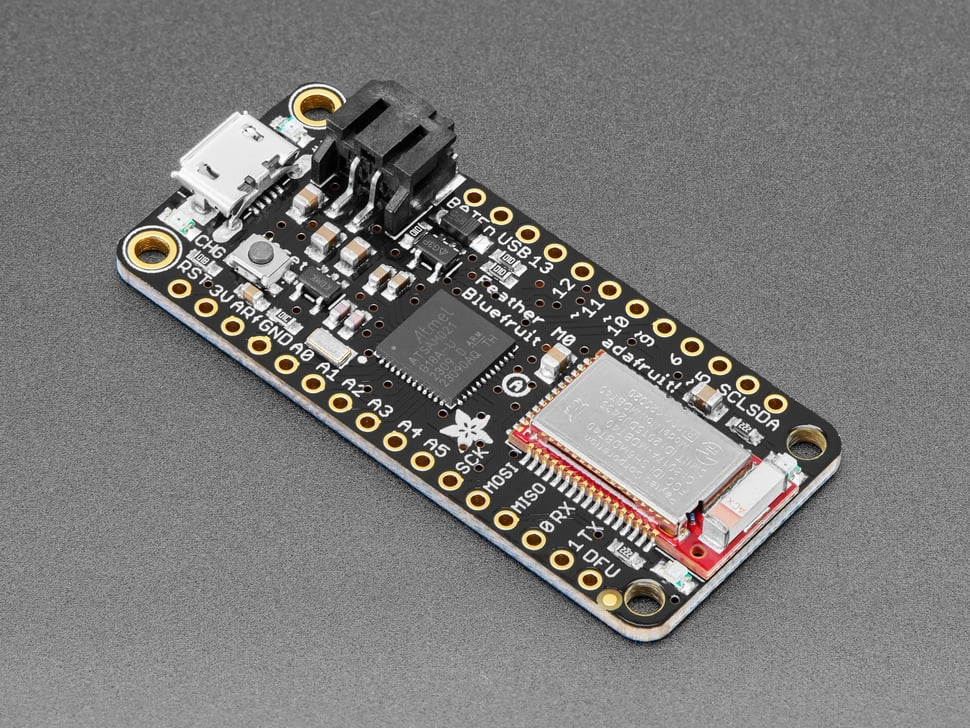
ou
-
Feather nRF52840 Express:
https://www.adafruit.com/product/4062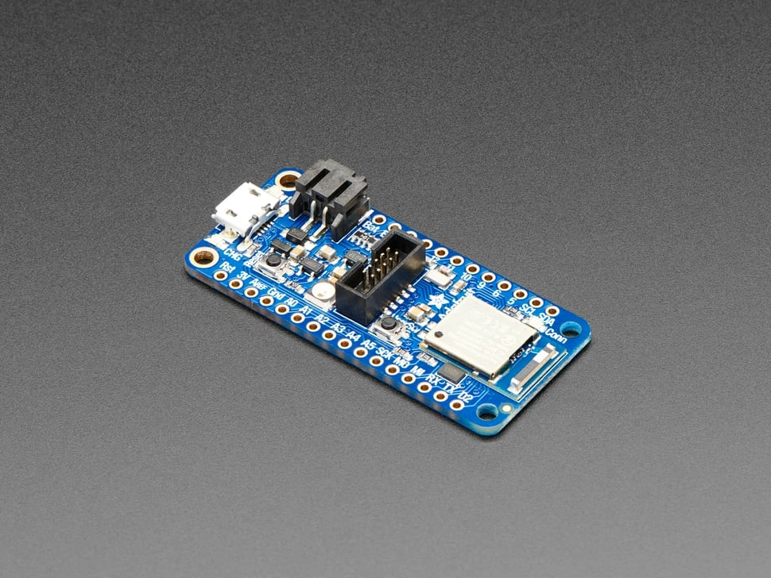
https://www.adafruit.com/product/2830.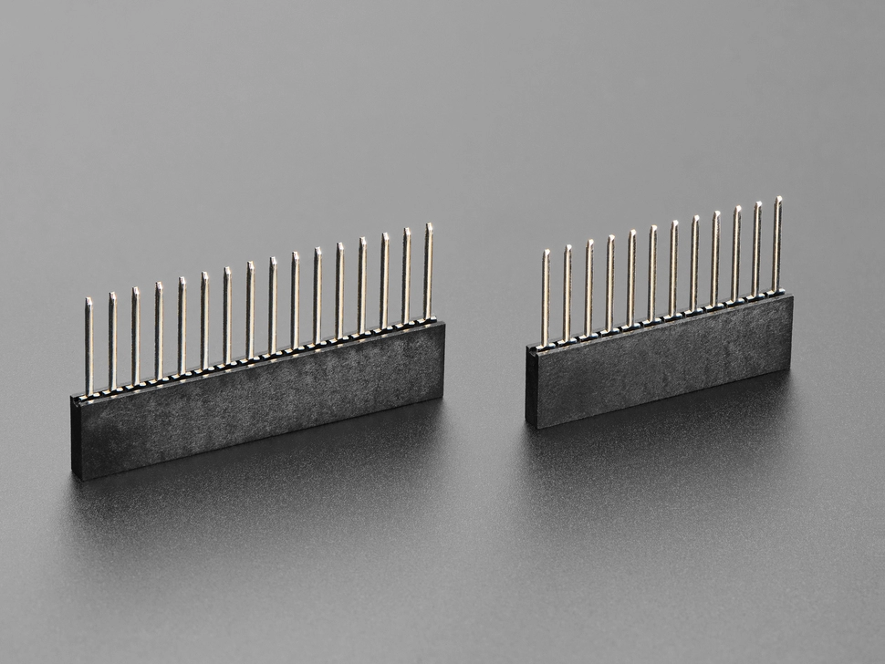
-
Feather M0 Bluefruit:
-
1 écran OLED 128x32 FeatherWing (assemblé)
Affichage pour les informations système et la navigation.
La version assemblée a déjà les broches soudées.
Voir sur Adafruit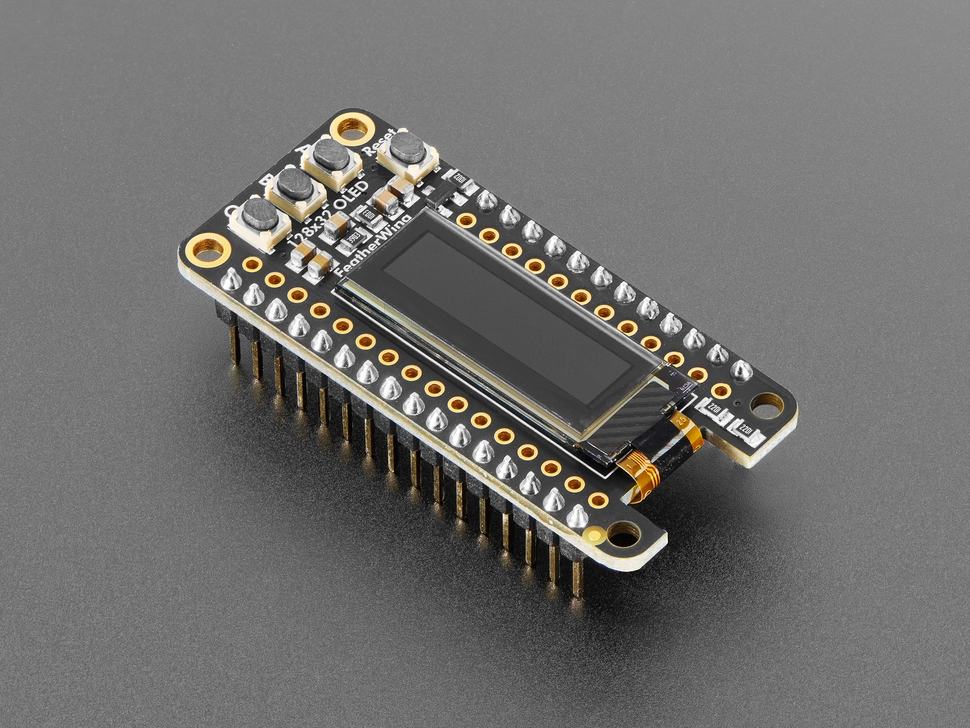
-
1 Joystick analogique JH-D202X-R4
Bien choisir la version R4 qui est en 10k Ohms, pas la R2 (5k Ohms)
Voir sur gotronic ou Adafruit ou sur un moteur de recherche pour trouver en dessous de 10 €.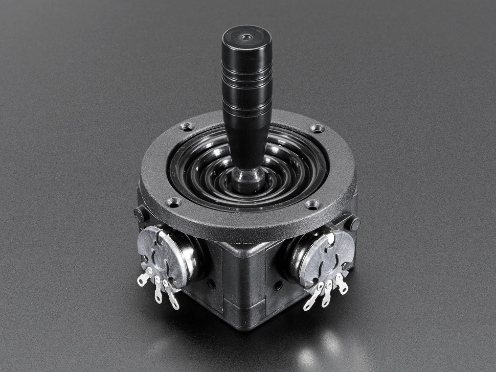
-
1 Batterie Lipo 3,7V en 1000 ou 12000 mAh avec connecteur JST-PH
A commander par exemple sur Adafruit.
Prendre au maximum une 1200 mAh pour qu'elle rentre dans le boîtier.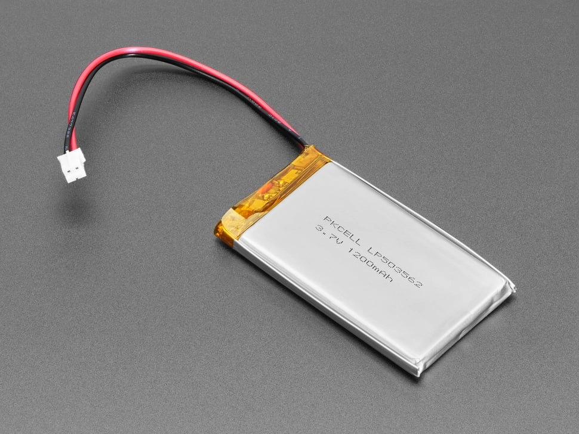
Attention à la polarité si vous n'achetez pas ce modèle, certaines batteries LiPo avec connecteur JST-PH ont la polarité inversée par rapport à l'original.
Vous pouvez inverser les fils en les dégageant du connecteur avec une petite pointe, ou souder les fils en inverse pendant les raccords.
Image du connecteur avec fils dans le bon sens ->
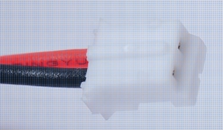
-
1 mini interrupteur à bascule
https://fr.aliexpress.com/item/1005006007996752.html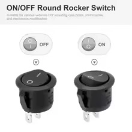
-
1 connecteur jst-ph male monté sur câble
https://letmeknow.fr/fr/jst/1640-connecteur-jst-ph-2-monte-sur-cable-male-0711331520326.html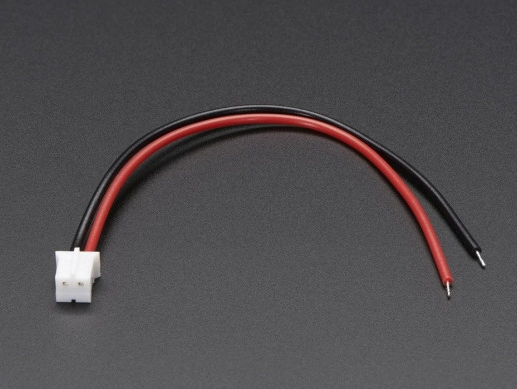
- 1 connecteur jst-ph femelle monté sur câble
https://letmeknow.fr/fr/jst/1641-connecteur-jst-ph-2-femelle-monte-sur-cable-642613346849.html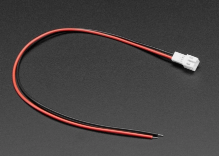
-
1 prise USB-C femelle vissable
https://fr.aliexpress.com/item/1005005347655323.html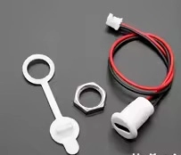
-
1 prise usb-micro mâle
https://fr.aliexpress.com/item/1005007457909582.html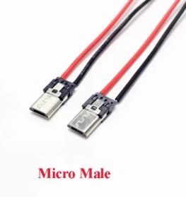
-
4 vis M2.5 x 25 ou 22 + écrous pour visser la feather sur le boîtier
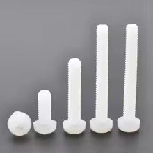
-
16 vis m4x10/12 tête plate empreinte hexagonale 2.5
https://fr.aliexpress.com/item/1005006674753858.html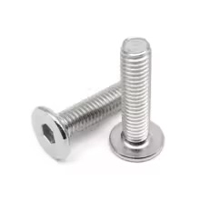
-
zip lock
-
fils de connection AWG 26-28 et câbles (dupont) femelles
-
manchons thermo-rétractables
- filament 3D
- une plaque de bois en CP 5mm de 800x400 mm